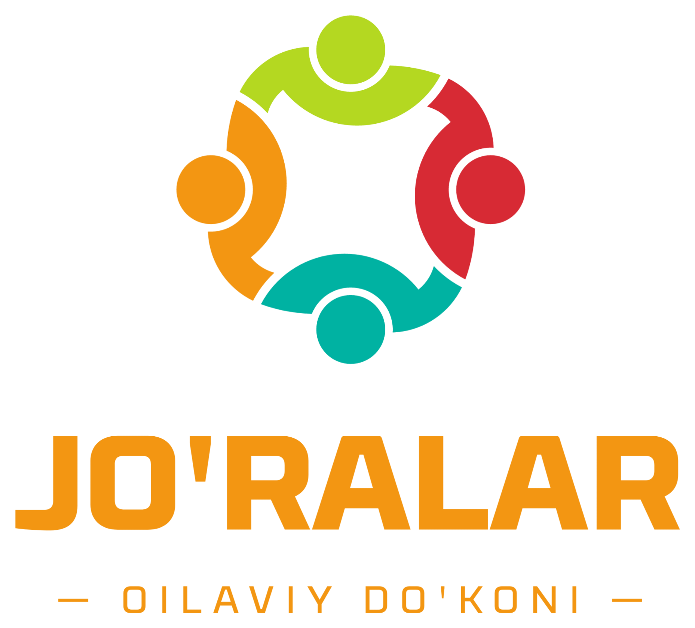

👔
01 / KIYIM-KECHAKErkaklar kiyimi
Kundalik va mavsumiy kiyimlar.
Kiyim-kechakdan tortib uy-ro'zg'or buyumlarigacha — kundalik xaridlaringiz uchun JO'RALAR oilaviy do'konlari.
Do'konlarimizda oilaning turli ehtiyojlari uchun mo'ljallangan mahsulot yo'nalishlari mavjud.
Kundalik va mavsumiy kiyimlar.
Turli uslub va did uchun kiyimlar.
Kichkintoylar va bolalar uchun.
Uy uchun kundalik kerakli buyumlar.
Dasturxon va oshxona uchun.
Bolajonlar uchun o'yinchoqlar.

JO'RALAR — erkaklar, ayollar va bolalar kiyimlari bilan birga uy-ro'zg'or buyumlari, idish-tovoqlar hamda bolalar o'yinchoqlarini taklif etuvchi oilaviy do'konlar tarmog'i.
Filiallarimiz Urgut, Samarqand shahri va Jomboy tumanida joylashgan.
Quyidagi mo'ljallar foydalanuvchi taqdim etgan ma'lumotlar asosida kiritildi. Ular rasmiy ko'cha manzili yoki xarita koordinatasi emas.
Mo'ljal: Urgut soy yonida
Mo'ljal: Korzinka binosi 2-qavat
Mo'ljal: osma ko'prik yonida
Mo'ljal: savdo markazi binosida
Mo'ljal: Urgut shahri; aniq mo'ljal keyin to'ldiriladi
Mo'ljal: Temir bozor, Korzinka 2-qavat
Mo'ljal: JO'RAMALL
Savollaringiz yoki filiallar bo'yicha ma'lumot uchun telefon va ijtimoiy tarmoqlarimiz orqali bog'laning.
Dam olish kunisiz
Har kuni 08:00 dan 22:00 gacha xizmatdamiz.
Biz bilan bog'laning ↗